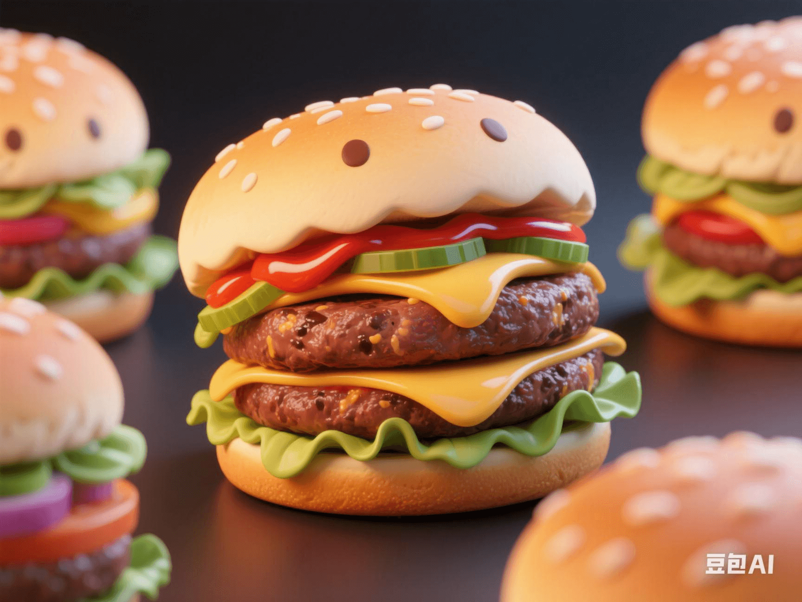

Insect Protein Burgers on the Market: Why Are They More Eco-Friendly but Less Tasty Than Beef Burgers?
PeaceLove.Top Insights :2025-04-19
🐜 Insect Protein: An Environment-Friendly Choice for Future Food
With the increasing global awareness of environmental protection, alternative foods are gradually making their way to the dinner table. Insect protein, as a nutritious and environmentally friendly food, has attracted more and more attention in recent years. 🌍 Compared with traditional beef, insect protein has significant advantages in environmental friendliness. Research shows that the water and land required for insect farming are far less than those for traditional livestock such as cows and sheep, and the greenhouse-gas emissions during the production of insect protein are also much lower. This makes insects a widely regarded alternative choice for 'future food'. 🐜🌱 Recently, insect-protein burgers have also entered the market, becoming a new choice for consumers who are concerned about environmental protection and sustainable lifestyles. Compared with traditional beef burgers, these burgers are not only more environmentally friendly in terms of raw-material sources but also have lower production costs and less resource consumption. 🌾🍃
🍔 'Eco-Friendly' Does Not Equal 'Delicious'
Although the environmental advantages of insect protein cannot be ignored, its taste has become the biggest problem. 😬 During the processing of insect protein, although special seasonings and cooking methods can be used to mask its original flavor, for many people, the taste and texture of insects are still unacceptable. 🦗🍽️ Despite the careful processing of the ingredients, removing the insect shells and extracting pure protein, the final burger still has a completely different taste and texture from traditional meat burgers. For many people, this 'eco-friendly' burger may be a bit lacking in the taste experience on the tongue and is difficult to match the delicious beef burger. 😋❌
🦗 Production Advantages of Insect Protein: Less Resource Consumption
Compared with traditional meat, the process of raising insects is more efficient and cost-effective. Insects require far less feed than beef production, and they can grow to maturity in a short period. Compared with the long production cycle of beef, which consumes a large amount of land and water, the production of insect protein is undoubtedly a more sustainable choice. 💧🌍 In addition, the emissions of insects are also much less than those of traditional livestock such as cows and sheep. When producing insect protein, the greenhouse-gas emissions are significantly lower than those of the meat industry, which is of great significance for mitigating climate change. 🌡️
🤔 Unpalatable but Acceptable? The Future of Insect Protein
The launch of insect-protein burgers, although not yet satisfactory in terms of taste, represents a new trend in food development. With the progress of technology and the improvement of food-processing techniques, the taste of insect protein is expected to be further enhanced in the future. 👨🍳🔬 In addition, as consumers' awareness of sustainable development and environmental protection increases, the market potential of insect protein as a 'green food' should not be underestimated. For consumers who value environmental protection and are willing to try new ingredients, insect-protein burgers may become a common choice on the future dinner table. 🌱🍔
🛑 Conclusion: Challenges and Opportunities for Future Food
The emergence of insect-protein burgers marks a major transformation in the food industry. It not only represents the trend of environmental protection and sustainable development but also reflects the potential of technology in changing our eating habits. However, to make insect-protein burgers a mainstream food, challenges such as taste need to be overcome. 🧑🍳🍴 With the development of technology, there may be more innovative alternative foods in the future, which can find a balance between taste and environmental protection and become the perfect combination of health, deliciousness, and sustainable living. 🌍💡 Whether insect protein can occupy a place in the global market may depend on whether each of us is willing to embrace this green-diet revolution. 👨🍳